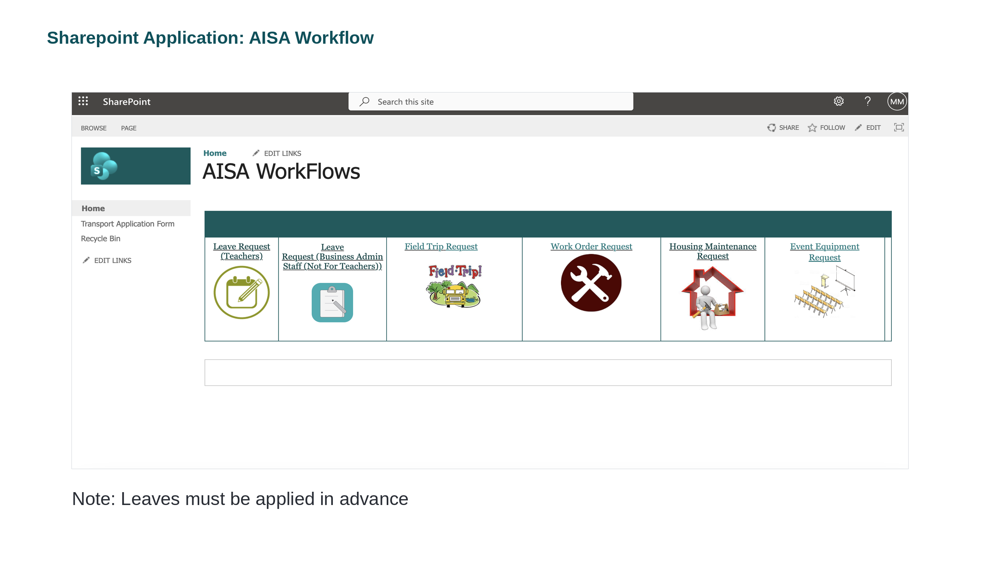
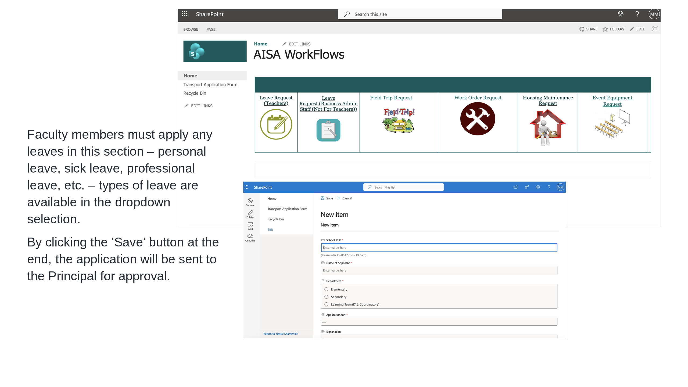
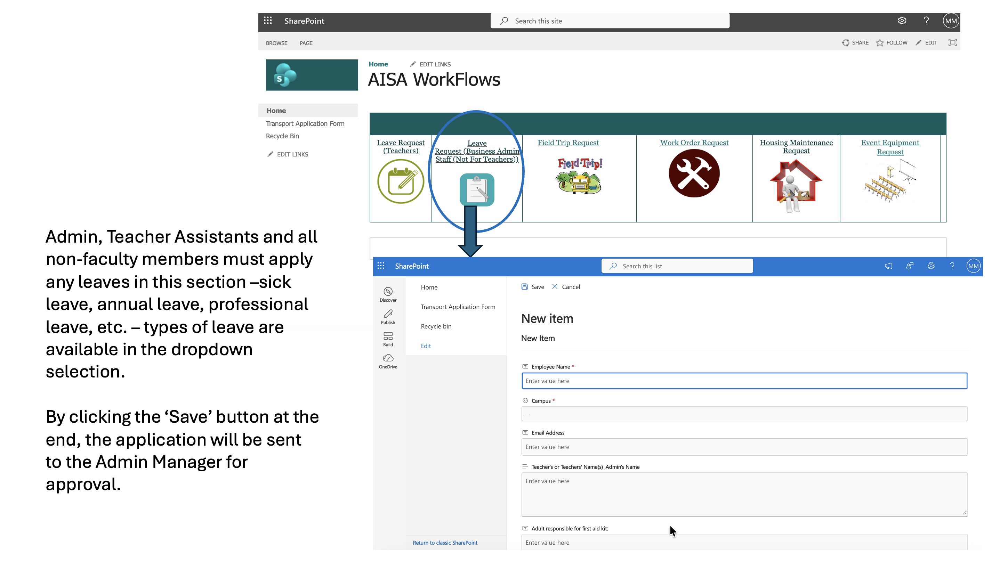
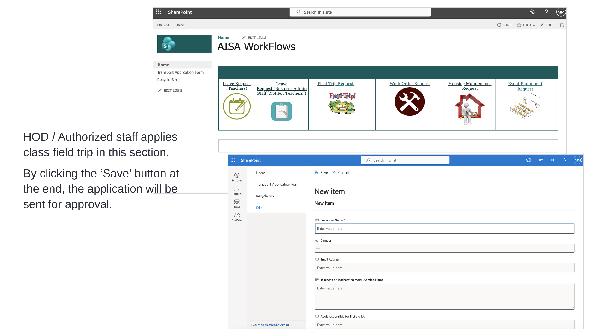
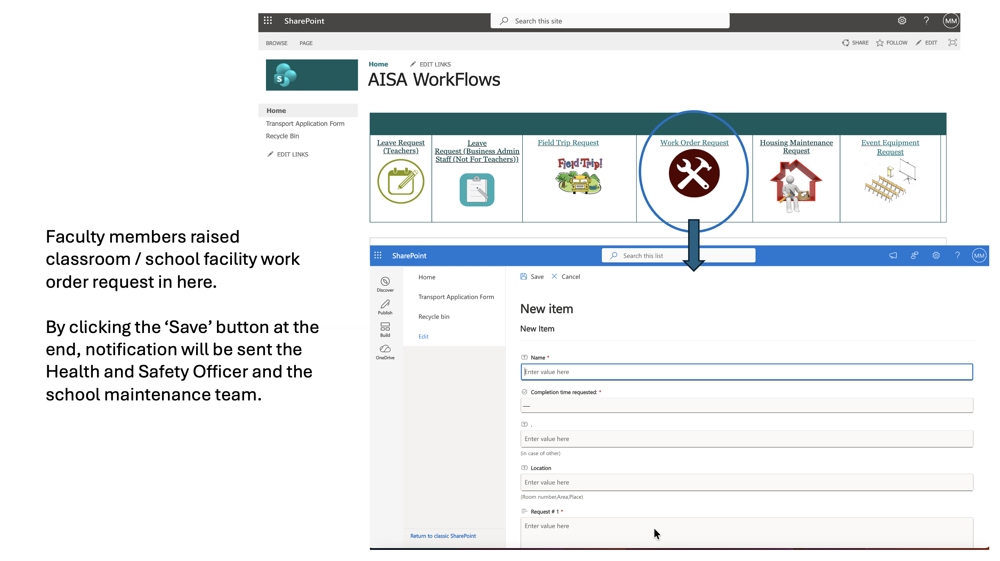
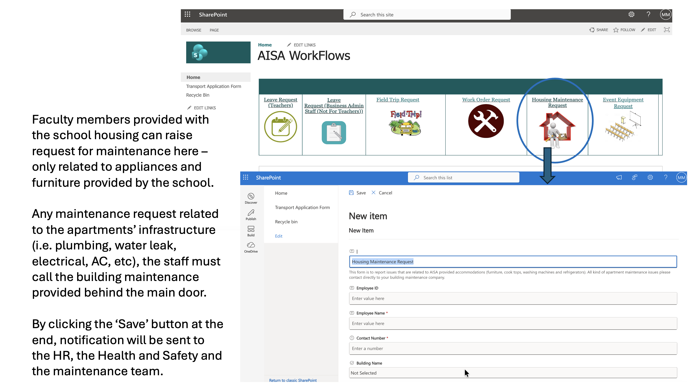
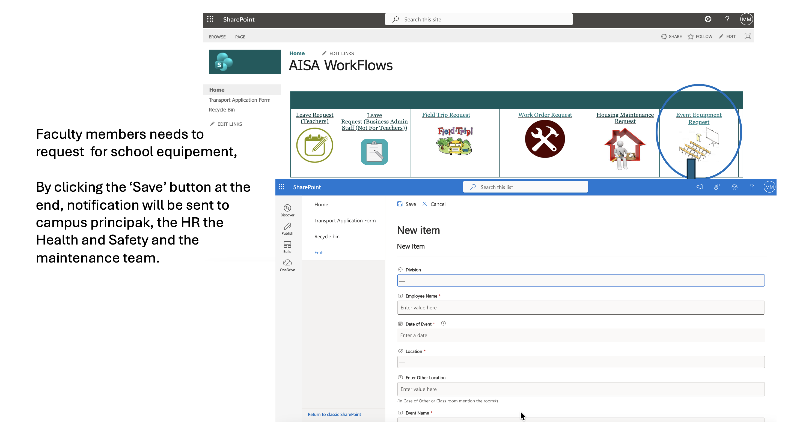

One place to request leave, field trips, work orders, housing maintenance and event equipment — the right form, to the right approver, every time.
Most of the everyday requests you'll make as an AISA staff member — booking leave, taking a class on a field trip, reporting something broken, asking for event equipment — all run through one place: the AISA WorkFlows site in SharePoint. Instead of chasing emails, you open the right tile, fill in a short form, and click Save. The system then routes your request to the correct approver automatically.

Leave Request (Teachers)
Personal, sick, professional leave → Principal
Leave Request (Non-Faculty)
Admin, TAs & support staff → Admin Manager
Field Trip Request
HOD / authorised staff → Approval
Work Order Request
Classroom / facility fixes → Health & Safety + Maintenance
Housing Maintenance
School-provided appliances & furniture → HR, H&S, Maintenance
Event Equipment
Chairs, staging, AV → Principal, HR, H&S, Maintenance
Leaves — and any request that needs approval before it can happen — must be applied for in advance. Submitting early gives your approver time to respond and keeps cover arrangements smooth.
Personal leave, sick leave, professional leave and more.
Faculty members apply for any leave in this section — personal leave, sick leave, professional leave, and so on. The available leave types are listed in the dropdown selection on the form, so pick the one that matches your situation.
Who
Teachers & faculty.
Approved by
The Principal.
When
In advance of the leave date.

Clicking the Save button at the end sends your application straight to the Principal for approval. You'll be notified as it moves through the workflow.
Admin, Teacher Assistants and all non-faculty members.
Admin, Teacher Assistants and all non-faculty members apply for leave in this section instead — sick leave, annual leave, professional leave, and so on. As with the teachers' form, the leave types are available in the dropdown selection.
The form looks and works just like the teachers' leave form — but when you click Save, the application is sent to the Admin Manager for approval (not the Principal). Picking the correct tile on the home page is what makes sure your request reaches the right person.

Faculty use the Leave Request (Teachers) tile.
Admin, TAs & support staff use the Leave Request (Business Admin Staff) tile.
Leaves must be applied for in advance — for every staff group.
A Teacher Assistant needs to book annual leave. Which is the correct route?
A Head of Department (HOD) or other authorised staff member applies for a class field trip in this section. The form captures the essentials of the trip — the campus and division, the staff accompanying students, and safety details such as who is responsible for the first-aid kit.

Clicking Save sends the application for approval before the trip can go ahead — so, like leave, submit it in good time.
Something broken in your classroom or around the school? Faculty members raise a classroom or school-facility work-order request here. Give the work a clear name, when you need it done by, exactly where it is, and a description of the request.

Clicking Save sends a notification to the Health & Safety Officer and the school maintenance team, who pick the job up from there.
If you live in school-provided housing, you can raise a maintenance request here — but for a specific scope. This form is only for the appliances and furniture provided by the school (think cook-tops, washing machines, refrigerators and school-supplied furniture).

Clicking Save notifies the HR, the Health & Safety team and the maintenance team.
Running an assembly, a performance or a school event? Faculty members request school equipment here — chairs, staging, screens and other set-up items. Tell the form your division, the date and location of the event, and what you need.

Clicking Save sends a notification to the Campus Principal, HR, Health & Safety and the maintenance team, so everyone who needs to prepare is looped in at once.
A teacher in school housing has a washing machine (provided by the school) that has stopped working, and separately notices a plumbing leak in the bathroom. What's the correct action?
| Request | Who uses it | Goes to |
|---|---|---|
| Leave Request (Teachers) | Faculty | Principal |
| Leave Request (Business Admin) | Admin, TAs, non-faculty | Admin Manager |
| Field Trip Request | HOD / authorised staff | Approval before the trip |
| Work Order Request | Faculty | Health & Safety + Maintenance |
| Housing Maintenance | Staff in school housing | HR, H&S, Maintenance |
| Event Equipment | Faculty | Principal, HR, H&S, Maintenance |
The left-hand menu of the WorkFlows site also holds a Transport Application Form. It works the same way — open it, complete the details, and Save. And the Recycle Bin lets you recover an item you deleted by mistake.
Download the original SharePoint WorkFlows deck (PPTX) to see every form again whenever you need it.